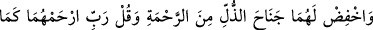
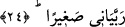
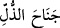

24. Onları esirgeyerek alçak gönüllülükle üzerlerine kanat ger ve: “Rabbim!
Küçüklüğümde onlar beni nasıl yetiştirmişlerse, şimdi de sen onlara (öyle) rahmet
et!” diyerek duâ et.
“Onları esirgeyerek alçak gönüllülükle üzerlerine kanat ger” ‘__WORD__ Cenâha’z-
zülli = alçak gönüllülük kanadı’ ifâdesi, istiâre-i mekniyye/kapalı istiâredir. Burada
tevâzu kuşa benzetilmiş ve hayâlî olarak da bu kuşa kanat verilmiştir. Yâni anne-babaya
karşı tevazu göster ve yumuşak huylu ol, demektir. Kuşlar yere inmek istediklerinde
kanatlarını alçaltır ve kanat kırarlar. Uçmak istediklerinde ise kanatlarını yükseltir,
açarlar. Bu âyette Allah Teâlâ, kuşun yere inerken kanatlarını alçaltmasını tevâzu ve
yumuşak huyluluk için bir misal kılmıştır. Kâdî Beyzâvî, şöyle der: “Allah Teâlâ’nın
evlâda kanatlarını indirmesini emretmesi anne babaya karşı alçak gönüllü olmanın
vâcibliği konusunda mübâlağa ve istiâreye hazırlık içindir.”
İbn Abbâs (r.anhümâ) “Anne-babana karşı kaba ve katı, efendisi karşısında zayıf,
zelîl ve suçlu bir köle gibi ol.” demiştir. Yâni tevâzu gösterip onların sevgisini
kazanmak için böyle davran.
“Esirgeyerek” yâni onlara ziyadesiyle merhametinden dolayı böyle ol. Çünkü bugün
onlar, daha önce Allah’ın yarattıkları içerisinde kendilerine en çok muhtaç olana
muhtaçtırlar. Müfessirler çocuğun ana-babasına muhabbet, şefkat ve merhamet hisleriyle
bakması gerektiğini söylemişlerdir. Bir hadiste şöyle buyrulmuştur: “Anne-babasına bir
defa merhametle bakan çocuğa hac ve umre sevabı verilir.” Ashab: “Peki bir günde
bin defa bakarsa ne olur?” deyince Rasûlullah (s.a.): “Bir günde yüz bin defa baksa da
böyledir.” buyurdu.[65] Bu rivâyet Hâlisatü’l-hakâyık’ta geçmektedir.
Yine kişi tevâzudan dolayı annesini öper. Nakledildiğine göre bir adam Üstad Ebû
İshâk’a geldi ve: “Dün gece rüyamda sakalının mücevher ve yakutlarla süslendiğini
gördüm.” dedi. Ebû İshâk: “Doğru söyledin. Çünkü dün gece uyumadan önce sakalımı
annemin ayaklarının altına sürdüm. Gördüğün rüya işte bunun içindir.” dedi.
Bir evlad anne-babasının hizmetini bizzat kendisi yapmalıdır, başkalarına havâle
etmemelidir. Çünkü bir kişinin hocasına, anne-babasına, devlet başkanına ve misafirine
hizmet etmesi, bir kusur ve ayıp değildir. Çocuk babasından daha fazla fıkıh bilse de
önüne geçip namaz kıldırmamalıdır. Yolda bulunan zararlı bir şeyi kaldırmanın dışında
yolda yürürken babasının önüne geçmemelidir. Bir mecliste anne-babasının yanında
iken baş köşeye oturmamalıdır. Yemek, içmek, oturmak ve konuşmak gibi hiçbir hususta
anne-babasından daha önce davranmamalıdır.
Fakihler söyle demişlerdir: Bir çocuk babasını kiliseye götürmemelidir. Ancak haber
gönderip kendilerini kiliseden alıp taşımasını isterlerse bunu yerine getirir. Babasına
içki ikram etmez ve uzatmaz. Fakat babası içkisini içtikten sonra bardağını alabilir.